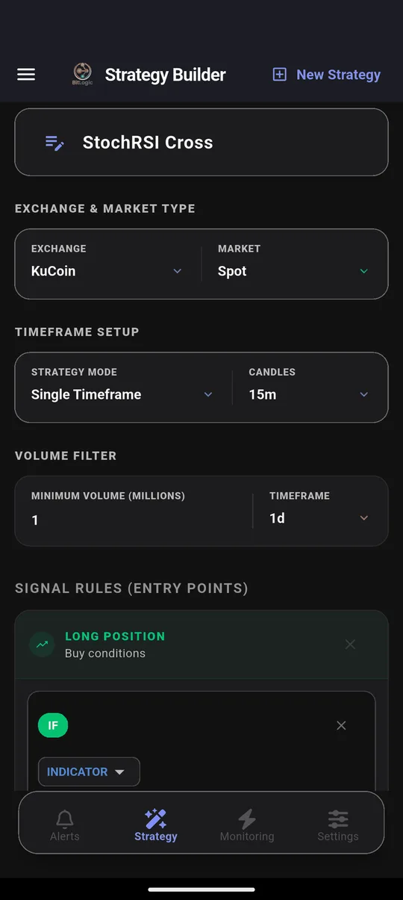
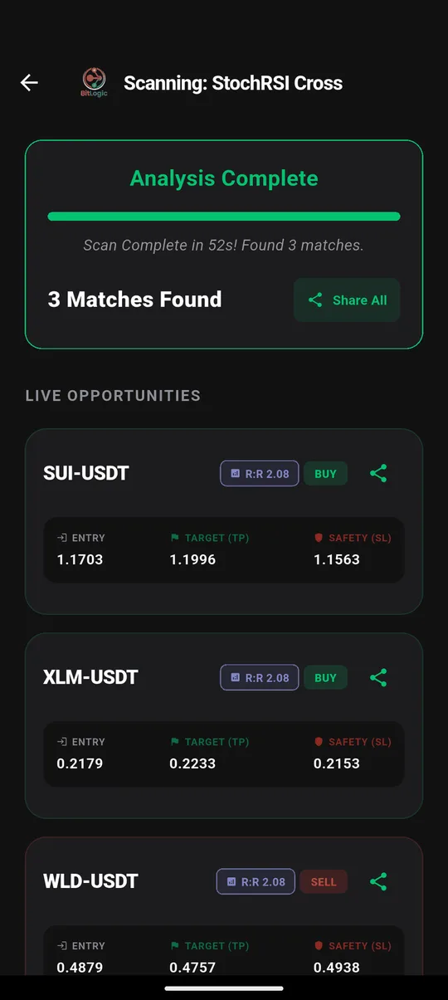

KuCoin Screener: How to Find Altcoin Breakouts Across 800+ Pairs
Quick answer: KuCoin lists more than 800 USDT spot pairs, which is why altcoin traders use it and why nobody can watch it by hand. KuCoin's price alerts cover one coin at a time. A screener checks the 400 most-traded pairs against your own momentum or volume rule in under a minute. BitLogic did it in 52 seconds on 26 September 2026 and returned three signals: two buys and a sell.
BitLogic is a no-code crypto screener and alert app for Android and Windows, with a free web screener. It scans every pair on an exchange against rules you build and sends matches as push notifications, or as Telegram messages on Pro.
Features, availability and test results checked 26 September 2026.
Can You Use KuCoin in Your Country?
KuCoin's regulatory position varies more than most exchanges'. Of the markets we cover, only Australia is clear:
| Country | KuCoin status |
|---|---|
| Australia | Available. Registered with AUSTRAC as a digital currency exchange; futures offered through a partner holding an Australian Financial Services Licence |
| United Kingdom | Not authorised by the FCA to serve UK customers |
| Germany / EU | KuCoin EU holds a MiCA licence (Austria), but the Austrian regulator restricted it in 2026. Check its current status before signing up |
| United States | Permanently barred from serving US customers (CFTC order, March 2026) |
| Canada | Not registered with Canadian securities regulators |
If you're outside Australia, the same approach works on a licensed exchange. See the Kraken and OKX guides.
Why KuCoin Needs a Screener More Than Most
| KuCoin | A typical major exchange | |
|---|---|---|
| USDT spot pairs | 800+ | 200–400 |
| Share of small and mid caps | High | Lower |
| Can you check every chart daily? | No | Barely |
KuCoin's strength is breadth. Coins often list there before bigger exchanges pick them up. That same breadth makes manual watching hopeless: by the time you scroll to a mover, it has moved.
A screener flips the process. You describe the move you're looking for, and it tells you which of the 400 most-traded pairs are making it.
How to Screen KuCoin in BitLogic
Step 1: Choose KuCoin
In the Strategy tab, pick KuCoin, then Spot or Futures. On KuCoin especially, set a minimum volume. Many listed pairs trade very little, and a signal on a pair you can't fill is worthless. This test used $1 million per day.

Step 2: Load or build a rule
This test used the prebuilt StochRSI Cross strategy, a fast momentum rule that suits altcoins' sharp swings:
- Long: StochRSI %K crosses above %D while %K is below 20 (turning up from oversold)
- Short: %K crosses below %D while %K is above 80 (turning down from overbought)
Every condition in a rule must be true for a pair to match.
Step 3: Scan

Step 4: Automate it
Live Monitoring re-runs the same strategy in the background (every 1, 5, 15 or 30 minutes, every 1 or 4 hours, or once a day) and notifies you when a new pair matches, even with the app closed. You can monitor up to five strategies at once. On Pro, the same alerts also go to Telegram: tap Connect Telegram, press Start in the bot, and you are done.
Screen KuCoin free on Google Play, or on Windows.
The Test: KuCoin Spot, 26 September 2026
| Setting | Value |
|---|---|
| Market | KuCoin USDT spot, 15-minute candles |
| Rule | StochRSI Cross (long and short) |
| Volume filter | $1M per day |
| Pairs checked | 400 of 800+ |
| Time | 52 seconds |
| Matches | 3: SUI (buy), XLM (buy), WLD (sell) |
Three signals from 400 pairs is the right order of magnitude for a 15-minute momentum rule. Every result is worth opening, and you won't train yourself to ignore the alerts.
These are scan results, not recommendations. A match means a pair met the rule at that moment, nothing more.
Three Altcoin Rules for KuCoin
1. Volume ignition
IF Volume [15m, Last Closed] Is Greater Than Volume SMA(20) × 3
AND Close [15m] Is Greater Than Open [15m]A green candle on triple the usual volume: the typical first sign of a small cap starting to move.
2. Breakout from a tight range
IF Close [1h, Last Closed] Crosses Above Bollinger Band upper (20, 2)
AND RSI(14) [1h] Is Between 55 and 75This catches a break above the band with momentum behind it, but not yet overheated. See also the Bollinger Band Squeeze strategy.
3. Short-term trend flip
IF EMA(9) [1h, Last Closed] Crosses Above EMA(21) [1h]
AND Close [1h] Is Greater Than EMA(50) [1h]A fast crossover only counts when price is also above its medium-term average.
KuCoin Timeframes in BitLogic
| Market | Timeframes |
|---|---|
| KuCoin Spot and Futures | 1m, 3m, 5m, 15m, 30m, 1h, 2h, 4h, 6h, 8h, 12h, 1d, 1w |
FAQ
Does KuCoin have a screener?
KuCoin has market lists, rankings and price alerts, but no screener that checks every pair against your own technical rule. BitLogic scans up to 400 of KuCoin's most-traded pairs against rules you build.
Is KuCoin legal in Australia?
Yes. KuCoin is registered with AUSTRAC as a digital currency exchange and offers futures through a partner with an Australian Financial Services Licence. It is barred from the US and restricted in the UK and the EU.
What's the best way to find altcoin breakouts on KuCoin?
Use a volume filter to remove illiquid pairs, then a rule that combines a volume spike with price confirmation, such as volume above three times its 20-candle average on a green candle. Let Live Monitoring re-run it every few minutes.
Can BitLogic send KuCoin alerts to Telegram?
Yes. BitLogic Pro delivers every Live Monitoring match to Telegram after a one-tap connection.
Does BitLogic need my KuCoin API key?
No. BitLogic reads KuCoin's public market data and never places trades.
The Bottom Line
KuCoin gives you more coins than any person can watch. A screener lets you watch the setups instead. Filter out illiquid pairs, pick a momentum or volume rule, and let BitLogic check KuCoin while you do something else.
Download BitLogic free on Google Play and run your first KuCoin scan.
Nothing here is financial advice. Small-cap crypto is highly volatile, and exchange availability changes, so check KuCoin's terms for your country.